游戏客户端开发基础-PC篇
GitHub - noxke/TencentGameClientOpenCourse: 腾讯游戏客户端公开课2023 腾讯菁英班
1.程序分析
使用ida打开crackme.exe，进入到程序的主逻辑函数，注意到有大量的xmm寄存器，但是不含call指令，先忽略，注意到两个特殊部分：
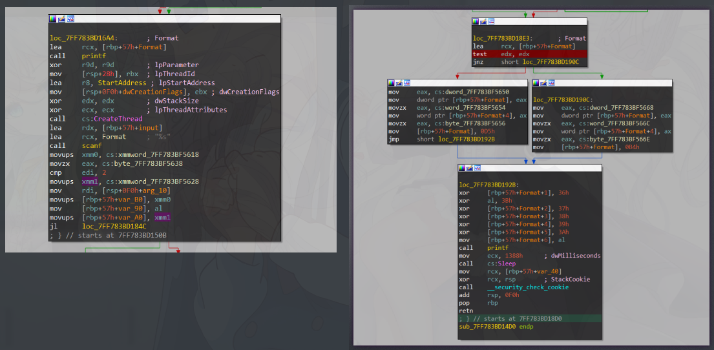
左图中调用了CreateThread函数创建子线程运行StartAddress处函数，右侧含有分支判断，完成判断后sleep并返回，猜测该处与程序的判断逻辑有关
F5查看反编译代码
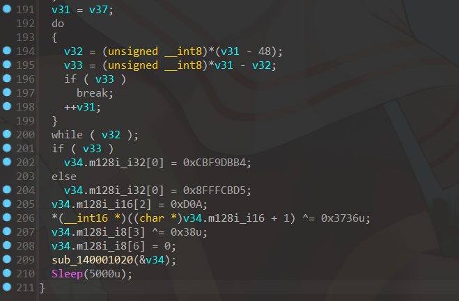末尾进行了数据串的比较，后根据比较结果为v32地址处的4个字节赋值，紧接着两个字节赋值0x0a,0x0d，换行回车符号，猜测v32地址处为输出字符串，结合测试时的输出错误，猜测0xCBF9DBB4 0x8FFFCBD5经过异或后为gbk编码格式的字符串，在线编码工具测试，猜测成立
显然，v37处储存的内容影响最后的输出结果，对v32=v37下断点启动调试，随意输入字符串后在该处断下，查看v32内容
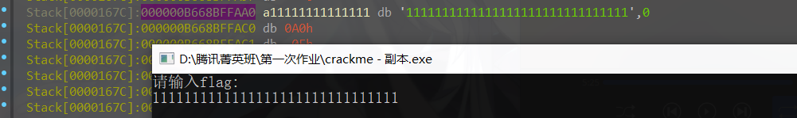
显然, v37为输入的原内容，根据比较部分可以得知，v37-48处为flag
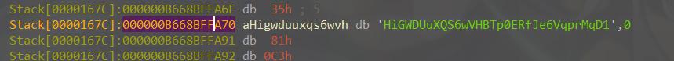
得到程序flagHiGWDUuXQS6wVHBTp0ERfJe6VqprMqD1
分析剩余部分得到程序的输入函数和输出函数，后续将称其为printf scanf
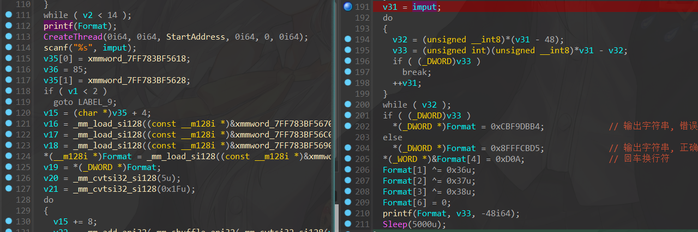
2.DLL注入分析
题目要求使用CreateRemoteThreadapi进行注入
最基础的代码注入方式, 使用
CreateRemoteThread在目标进程下创建远程线程, 调用LoadLibraryA加载DLL到目标进程, DLL加载/卸载时调用DllMain函数, 执行注入DLL中的代码,LoadLibraryA参数需要先写入目标进程的内存, 使用VirtualAllocEx在目标进程内存下分配内存, 使用WriteProcessMemory将需要注入的DLL地址写入目标内
1 | |
创建远程线程时传入的
LoadLibraryA地址并不是直接获取目标进程中的函数地址, 因为系统DLL在不同进程中加载地址相同
编写一个输出字符串的DLL进行注入测试
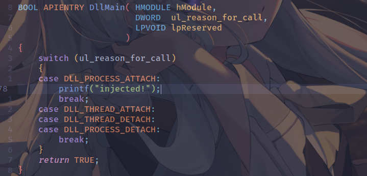
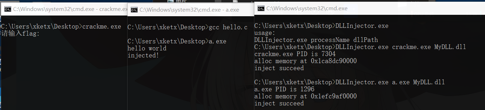
注入creackme.exe失败，但注入其他程序正常，重新分析代码，分析CreateThread函数创建的线程执行的StartAddress处代码，找到关键位置
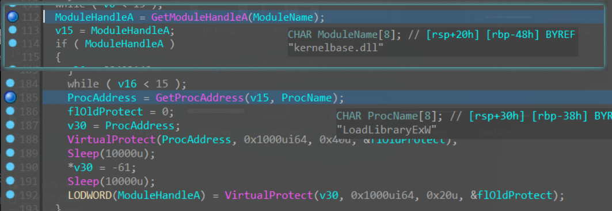
此处将LoadLibraryExW函数的内存权限修改为可写入，然后将第一个字节patch成-61（0xC3, ret指令），将指令第一行修改为ret指令，将LoadLibraryExW函数patch掉了，因此LoadLibraryA函数也无法正常使用
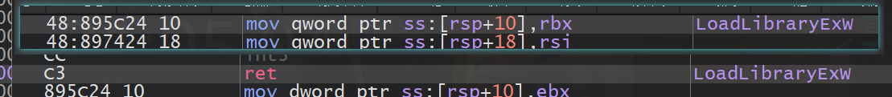
不过中间有10秒的sleep,在启动后就注入即可
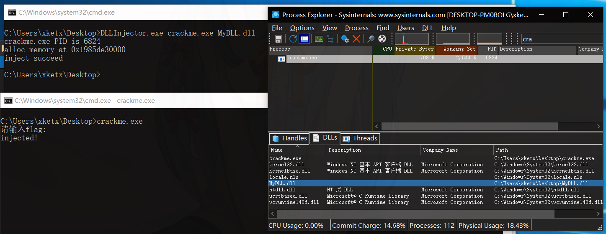
3.hook代码
将输出结果修改称正确，patch一下分支语句或者将错误的gbk编码patch成正确就可以，但是题目要求用DLL注入hook程序，因此此处用注入的DLL修改程序，hook掉printf函数，思路如下
将
printf前几行指令修改为跳转指令，跳转到注入的shellcode中，在shellcode中判断printf的参数（即待输出的字符串）是否为错误，如果为错误，将其修改为正确，替换完成后在shellcode中执行printf前几行被替换的指令，然后返回到printf函数继续执行，输出修改后的字符串
printf修改前后代码:
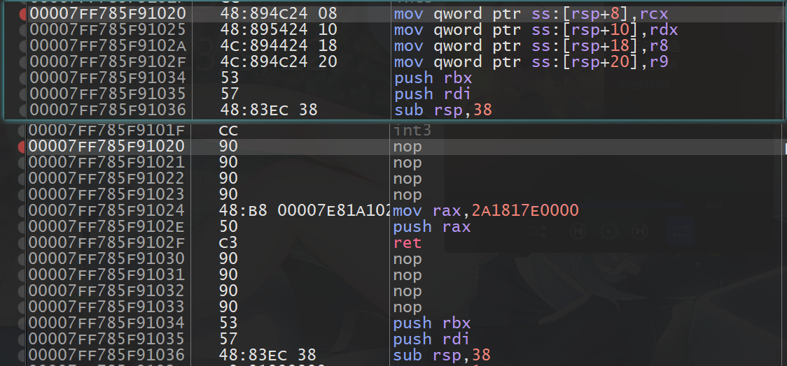修改前前4条指令为将寄存器参数压入堆栈，此处将其修改为
1 | |
将shellcode的地址压入堆栈中，使用ret指令跳转到shellcode代码出，shellcode代码如下（前后填充的nop省略）
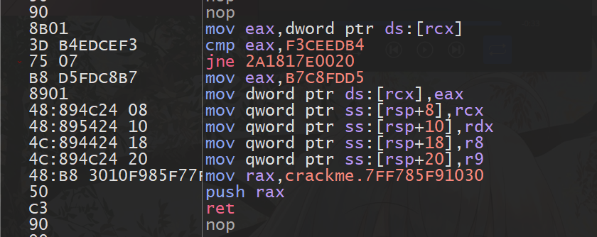主要代码为
1 | |
只需要在注入的DLL中计算printf的地址，将地址写入shellcode,将shellcode写入可执行内存，再hook掉printf的代码即可完成修改操作
设置hook代码如下：
1 | |
由于PE文件加载时会进行重定向操作，所以printf函数的地址不固定，需要通过PE文件加载的基地址+函数偏移量得到printf函数的准确地址，另外shellcode需要申请可执行内存块确保指令可以正常执行，需要修改printf函数的内存块可写，修改其前几行指令
注入后运行程序，任意输入均返回正确e